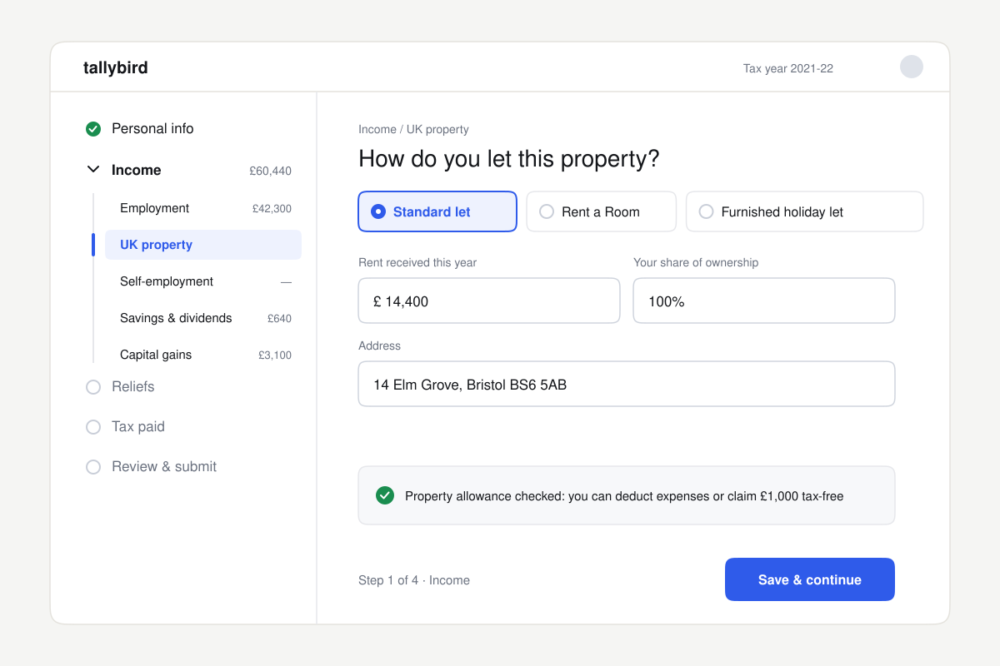

Overview
Nobody enjoys doing their taxes. The software shouldn't make it worse.
Tallybird is a London fintech that helps people across the UK file their Self Assessment tax return online. The first version did its job. But years of new features had stacked up, and people were getting lost halfway through.
I spent three months redesigning the filing web app end to end: the structure, the flows and the visual language. Here's why we did it, and how.

Who files with Tallybird
Tallybird is a software-as-a-service platform for individuals and small businesses. It handles tax filing today, and the company wanted it to handle tax planning next.
The user is anyone in the UK who has to file Self Assessment. Freelancers. Landlords. Sole traders. Company directors. Employees with a side income. People with one income, and people with five.
“Just tell me what to do next, and tell me I got it right.”
The average Self Assessment filer, in one lineWhat they need
- A clear path from start to filed
- Plain words, not tax jargon
- Confidence that the final number is correct
What gets in the way
- They file once a year and forget everything in between
- Several income sources, each with its own rules
- Fear of a mistake, and of a penalty letter from HMRC
How filing works
Before the design, the domain. Filing a Self Assessment tax return with HMRC comes down to four steps. Tap through them.
Add up every income
Pull together everything you earned in the tax year. The return splits it into sections like these:
- Employment
- Self-employment
- UK property
- Savings and dividends
- Capital gains
Claim reliefs and allowances
Bring the taxable amount down with what you're allowed to claim: allowable expenses, pension contributions, Gift Aid, and tax already taken through PAYE.
Review everything
Check every figure against your documents. This is where earlier mistakes surface, and where most people get stuck.
Submit to HMRC
Submit the return before the 31 January deadline and see what you owe. Done for the year.
What was broken
The original product had done what it set out to do. But over time it collected design debt and engineering debt: patches on patches, no shared design language, and flows that no longer matched how people actually filed.
01Navigation
The structure was unclear, and some features existed twice. People lost their place, and with it the context of what they were doing.
02Discoverability
No clear primary action. Input fields faded into the page. People couldn't tell what to click, so they hesitated.
03Visual hierarchy
In testing, people kept getting confused. Everything looked equally important, so nothing stood out.
04Scalability
The business was moving into tax planning. The old structure couldn't hold filing and planning side by side without a rebuild.
Finding where it hurt
I didn't want to redesign from opinion. So I pulled together every signal we had: session recordings, funnels, support tickets and our own testing sessions.
Three moments people quit
The data kept pointing at the same three screens. For each one, drag the slider to compare the old product with what we shipped. The numbered pins match the notes underneath.
“Wait, where am I?”
Before
- 1You're in UK property, but nothing says so. Nothing hints that Income has five parts, either.
- 2Pale, empty fields. You have to know what to type before you start.
After
- 1The menu expands to show every income type with its running total. You always know where you are.
- 2Options are shown up front and sensible defaults are pre-filled. Pick, don't type.
“I thought I was done.”
Before
- 1No sense of progress. Is this step two, or step twelve?
- 2Required and optional cards look identical. People skipped the required ones, then hit errors at the very end. This was one of the biggest causes of drop-off.
- 3“Next” lets you move on with missing information.
After
- 1A stepper shows where you are in the whole filing.
- 2Required items are flagged, counted and grouped first. Mistakes get caught here, not at submit.
- 3Optional items step back visually, so they don't compete for attention.
“What am I supposed to click?”
Before
- 1Big illustrations steal attention from the actual choice.
- 2The labels are tiny and unexplained. What counts as a “furnished holiday let”?
- 3The button is pale and tucked away in a corner.
After
- 1Three equal options, so no choice looks more “right” than the others.
- 2A plain-language line under each one, plus a hint for the unsure.
- 3One clear primary button, right where your eye lands next.
Put together, the drop-off data and the new tax planning scope made the call for us. Patching wasn't enough. The product needed a full redesign and rebuild.
Design goals
Make it simple, but significant.
The hard part of tax software isn't the visuals. It's taking a mountain of required information and making it feel small. Before drawing a single screen, I agreed three rules with the team. Every design decision had to pass all three.
Always show the next step
Intuitive and transparent. At any point, you know where you are, what's left, and what to do now.
Fewer clicks, less time
Cut every click that doesn't earn its place. Fewer steps means less time on task, and fewer chances to give up.
Earn trust
People are handing over their finances. A calm, consistent interface that catches mistakes early makes them believe the final number.
Impact
After the redesign of these data-heavy layouts, the number of people filing on their own, without help from a tax expert, tripled in a single year.
Returns filed through Tallybird by users on their own, without a tax expert's help.
And a handful of people took the time to tweet about it, which honestly made my week.
What I learned
- Learn the domain firstI had no fintech background. I had to learn how UK Self Assessment actually works before I could simplify it for anyone else.
- Know the business, not just the userSitting with stakeholders showed me the targets behind the brief, and why tax planning mattered so much.
- Behaviour beats opinionWatching real sessions told me more than any guess. Tracking patterns kept our goals honest.
- Design is a team sportThe data lived with different teams. Staying in constant contact with them was the only way to see the full picture.
- Ship, test, adjust, repeatEvery feedback session changed something. Keep testing until you understand your users, then test again.
Principles used
The UX principles behind the decisions above. Tap any one to read what it means here.
Visibility of system statusNielsen #1
Always tell people what's going on. The expandable menu, running totals and the stepper all answer “where am I, and what's left?”
Recognition over recallNielsen #6
Show options instead of making people remember them. Pre-shown property types beat an empty dropdown.
Error preventionNielsen #5
Better than a good error message is no error at all. Flagging required items early stopped failures at submit.
Aesthetic and minimalist designNielsen #8
Every extra element competes with the ones that matter. The decorative illustrations had to go.
Consistency and standardsNielsen #4
One design language across filing and planning, so learning one part teaches you the rest.
Visual hierarchyGestalt
Size, weight, colour and position tell people what to look at first. If everything is loud, nothing is.
Von Restorff effectIsolation effect
The thing that looks different gets remembered. Required items get a distinct style so they can't be missed.
Hick's lawDecision time
More choices, slower decisions. Each screen asks one question with a few clear answers.
Fitts's lawTarget size
Big, nearby targets are faster to hit. The primary button sits where the eye and cursor already are.
Goal-gradient effectMotivation
People speed up as they near the finish. Showing progress, and “2 left”, keeps them going.
Progressive disclosureComplexity
Show only what's needed now, reveal the rest when it's relevant. It's how filing and planning fit in one product.
SignifiersDon Norman
Things should look like what they do. Fields need to look like fields, and buttons like buttons.
Aesthetic-usability effectTrust
People trust, and forgive, interfaces that look considered. With money involved, that trust matters.